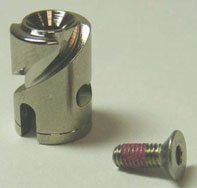
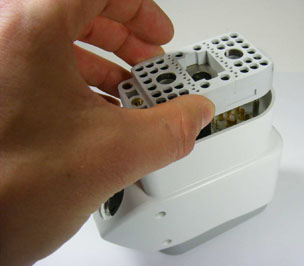
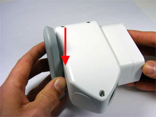
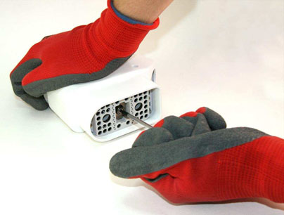
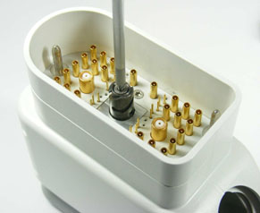
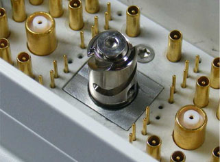
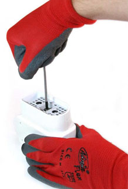

- Object ID: 00000018WIA306FC410GYZ
- Topic ID: id_2004456 Version: 6.1
- Date: Jul 19, 2022 1:36:30 PM
Replacing the coil plug connector spindle
Replace the spindle tip on the coil connector.
About this task
Procedure
- Important: The new spindle contains beryllium copper and is nickel plated. Wash your hands thoroughly after completing this procedure.Move the coil with the defective spindle to a suitable location outside of the magnet room.
- Make sure that all components (shown below) are included in the HDv P-Port Replacement Spindle Tip Kit.Note: The countersunk screw is 8 mm long and has a red coating. A hexagonal socket is required.
Figure 1. Spindle tip and M3 countersunk screw 
- Put the unpopulated connector found in the Spindle Tip Replacement Kit (5150668-33) into the coil plug connector, and rotate the handle clockwise to lock the position as shown.
Figure 2. Putting the unpopulated connector into the plug 
Figure 3. Rotating unpopulated connector to lock in position 
- Using the T10 Torx or a 2 mm Allen wrench, loosen the screw on the unpopulated connector (as shown) with only one rotation counterclockwise.
Figure 4. Loosening the screw on the unpopulated connector 
- Remove the unpopulated connector from the coil plug connector.
- Loosen and remove the screw from the plug using either the T10 Torx or a 2 mm Allen wrench as shown. Discard the screw.Note: The screw from the plug must not be reused. If the screw is reused, it may loosen and the spindle may fall off.
Figure 5. Removing screw from plug 
- Replace the spindle tip and the countersunk screw, and turn the screw using a 2 mm Allen wrench, but do not tighten.
Figure 6. Spindle tip and screw replaced 
- Put the unpopulated connector into the plug again, and rotate the handle clockwise into the locked position as shown in Figure 2 and Figure 3.
- Hand-tighten the screw, and turn it an additional 1/10 turn (1.24 N m) with the 2 mm Allen wrench as shown.
Figure 7. Tightening screw in unpopulated connector 
- Remove the blank P-port plug, and save the plug and Torx bit driver for future use.
- Dispose of the removed parts according to the Safety Data Sheet (SDS) provided with the parts kit.